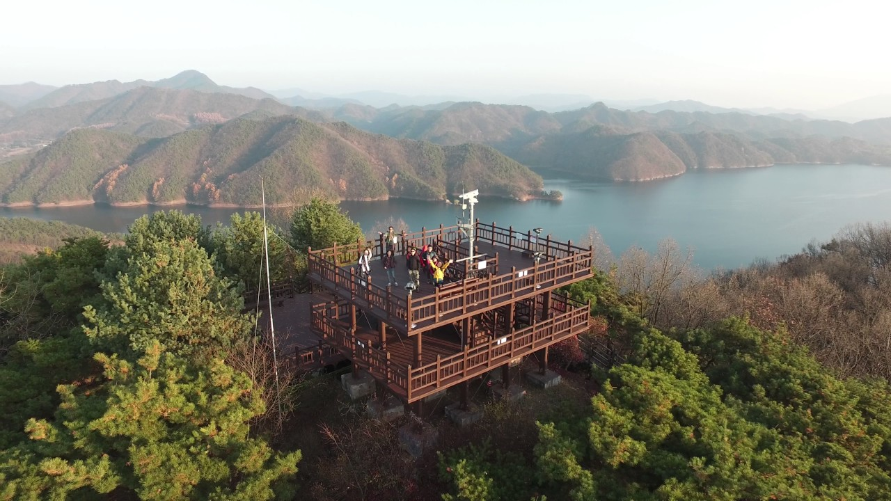

지상2층, 지하1층, 연면적 2,699㎡ 규모로 1층은 회의실, 접견실, 식당, 손님실이 있고 2층은 대통령전용공간으로 침실, 서재, 거실, 식당, 가족실, 한실 등이 있으며 다섯분의 대통령이 88회 이용한 국내유일의 대통령휴양시설이다.
전망대

2009년 건립된 '청남대 전망대'에 올라보면, 한눈에 내려다 보이는 청남대와 이를 둘러싼 대청호반의 조화로운 경관에 경탄을 금치 못할 것이다.
그래서 내륙의 다도해로 불리운다.
날씨가 맑은 날이면 청남대 전경은 물론 신탄진과 대전까지 내려다 볼 수 있어, 일상에서의 답답함을 해소하고 분위기를 전환해볼 수 있는 최적의 장소이다.
전망대에 오르는 645개의 목재 계단은 관람객의 행운과 기쁨을 기원하는 의미로 "청남대 행복의 계단" 이라 불린다.
대통령광장
대통령광장은 대한민국 역대 대통령의 모습을 기리고자
이승만, 윤보선, 박정희, 최규하, 전두환, 노태우, 김영삼, 김대중, 노무현 대통령의 모습을 청동상으로 제작 설치하였으며,
광장내에는 청와대, 백악관, 버킹엄궁 등 세계 9개국 대통령궁 또는 왕궁의 사진이 들어간 타일 벽화를 2009년도에 준공하였다.
돌탑
청남대의 충청북도 이관을 기념하기 위해 문의면 32개 마을 주민수와 같은 5800개의 돌로 쌓았다.
주민의 단합을 뜻하는 형태로 2003.4.18 개방행사시 노무현대통령이 참석한 가운데 제막을 가진다.
음악분수대
청남대 내에 대통령기념관이 남향으로 자리하고 있다.
대통령기념관 앞에는 인공연못에 설치되어 있으며
청남대를 찾는 관광객들에게 음악과 함께 음악에 맞추어
연주하고있으며 시원함을 선물한다.